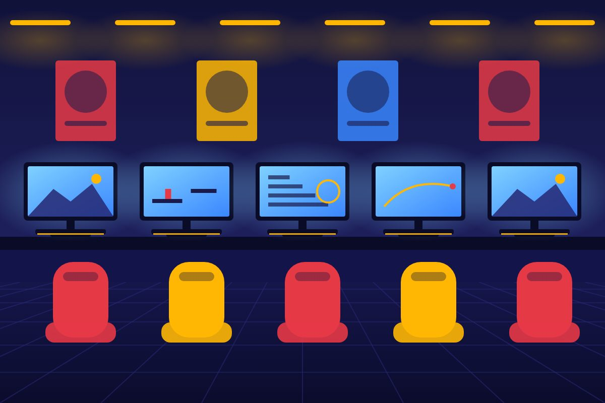
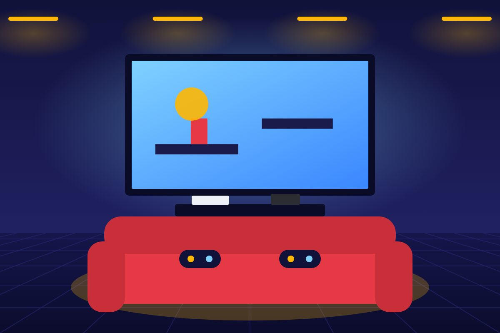
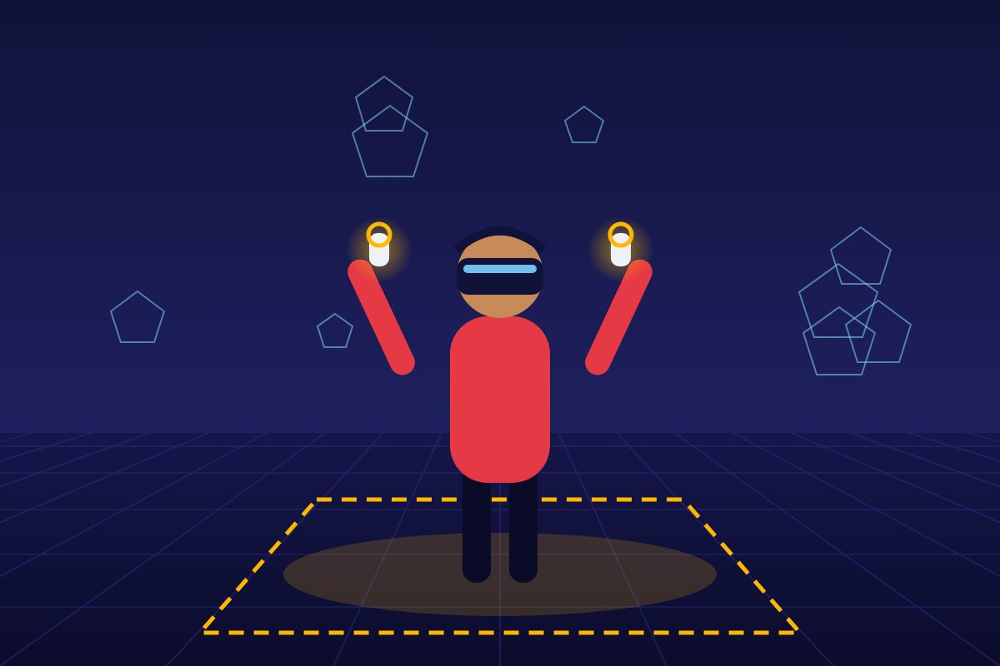
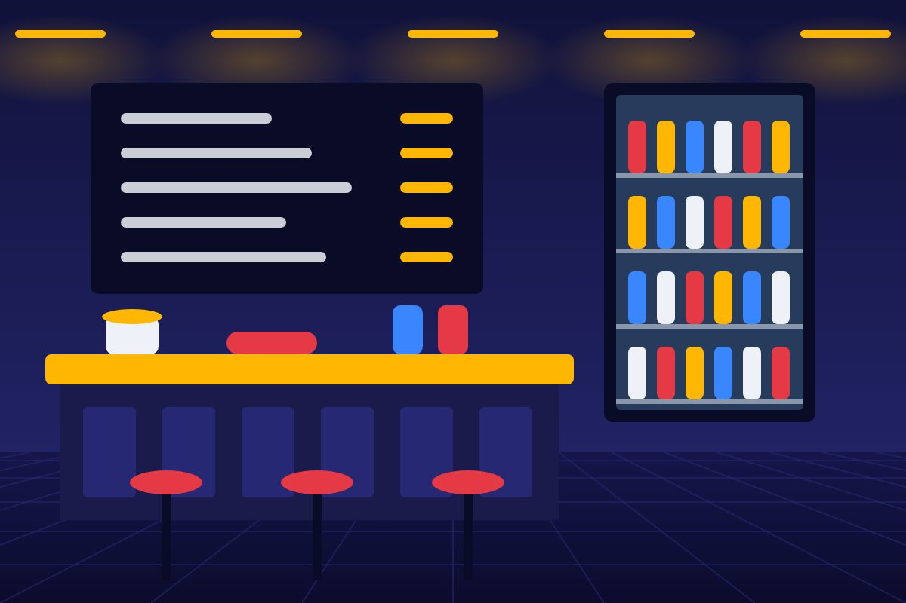

Galeria
Conheça o espaço antes de vir.
Tour de 20 segundos
Da porta até a lanchonete: um passeio rápido pelas seis áreas da Respawn, com a vinheta oficial dos torneios ao fundo.
O vídeo tem legendas em português. Ative pelo botão de legendas do player.
Fotos do espaço






Ilustrações do espaço criadas para este projeto.